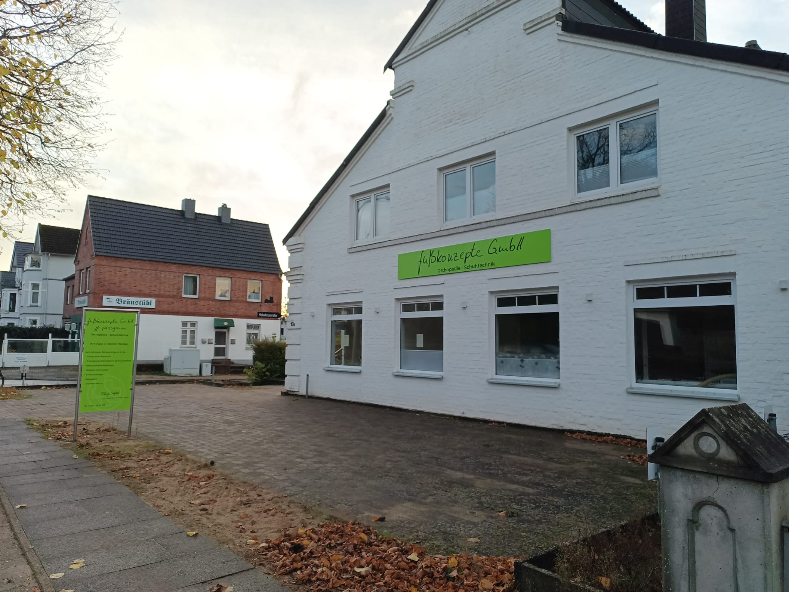

Öffnungszeiten
- Montag: 9 - 13 Uhr & 15 - 17 Uhr
- Dienstag: 9 - 13 Uhr & 15 - 17 Uhr
- Mittwoch: 9 - 13 Uhr
- Donnerstag: 9 - 13 Uhr & 15 - 17 Uhr
- Freitag: Geschlossen
Termine nach Vereinbarung
Kontakt
Thorge Siegfried
Telefon: 04551 - 96 95 308
E-Mail: fußkonzepte@t-online.de
Adresse
fußkonzepte GmbH
Eutiner Straße 17a
23795 Bad Segeberg, Schleswig Holstein

Unsere Leistungen
- Orthopädische Maßschuhe
Individuelle Anfertigung von orthopädischen Maßschuhen und Maßschuhen nach individuellem Abdruck.
- Orthopädische Maßeinlagen im 3D-Druckverfahren
Nach digitalem Fußscan und umfangreicher Anamnese fertige ich individuelle Maßeinlagen an. Diese Maßeinlagen sind recyclebar und können dem Wertstoffkreislauf wieder zugeführt werden.
- Sensomotorische Maßeinlagen
Nach einer umfangreichen Anamnese fertige ich sensomotorische (propriozeptive) Maßeinlagen zur gezielten Behandlung unterschiedlichster statischer Probleme an.
- Einlage in Sonderanfertigung nach Gipsabdruck
Diese Einlagen werden nach einem individuellen Gipsabdruck hergestellt, zur gezielten Behandlung schwerer Fußfehlstellungen.
- Diabetikerversorgungen
Orthopädische Maßschuhe, Diabetiker-Schutzschuhe und diabetesadaptierte Fußbettungen nach individuellem Fußabdruck, Innendruckmessung von Schuhen sowie diabetesadaptierte Arbeitssicherheitsschuhe.
- Schuhzurichtungen
Schuherhöhung, Abrollsohlen, Schuhinnen- oder Außenranderhöhung, Schmetterlingsrollen, Schuhbodenversteifung.
- Reparaturen
Absatz und Sohlenreparaturen, Reißverschlüsse, Näharbeiten, Lederreparaturen.
- ... und vieles mehr
Kommen Sie vorbei, fragen Sie nach und lassen Sie sich beraten. Es gibt mehr Möglichkeiten als Sie sich vorstellen können.